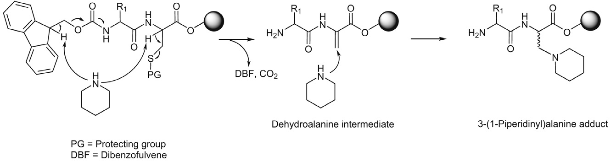
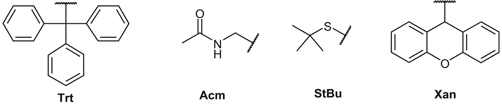
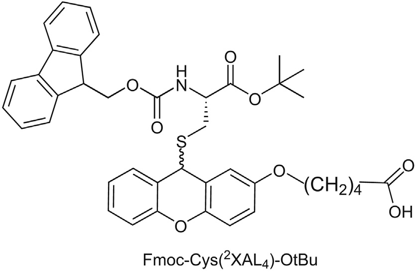
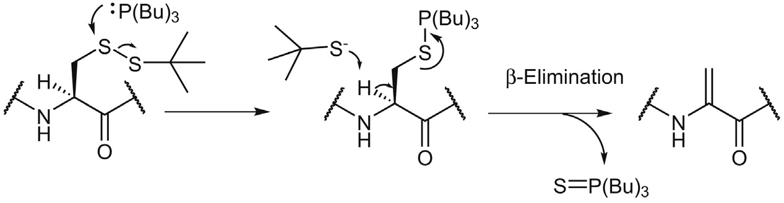
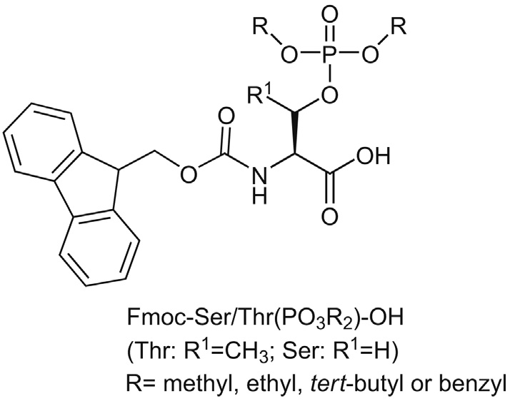
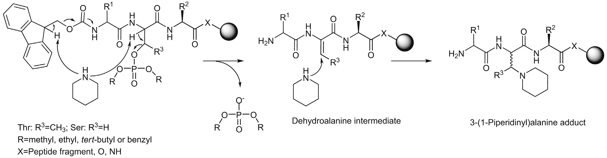
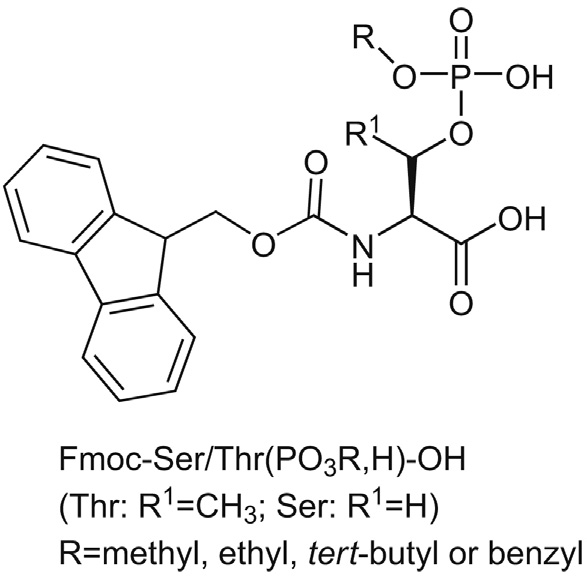

Chapter 2: β-Elimination Side Reactions（β-消除副反应）
β-Elimination is a group of common side reactions that predominantly affect peptides bearing an electron-withdrawing substituent located on the side chain Cβ position, e.g., Cys and phosphorylated Ser/Thr.
β-消除是一类常见的副反应，主要影响侧链Cβ位带有吸电子取代基的肽，如Cys和磷酸化的Ser/Thr。
这些肽在碱性条件下容易发生β-消除，导致Cβ位取代基的消除，形成脱氢丙氨酸（dehydroalanine）及相应的加成产物。
Cys侧链保护基和Fmoc脱保护碱是影响β-消除倾向的最重要因素。
Fmoc脱保护过程中的β-消除：
1. 哌啶（piperidine）作为碱，夺取Cys的α-H（Ha）
2. Cys侧链保护基（如StBu、Acm、Trt）发生β-消除
3. 形成脱氢丙氨酸（dehydroalanine）中间体
4. 哌啶进行Michael加成，生成3-(1-piperidinyl)alanine
5. 分子量增加+51 amu（如果使用4-methylpiperidine，增加+65 amu）

Figure 2.1 Piperidine-induced Cys β-elimination and subsequent piperidine addition (Page 38)
1. Cys侧链保护基的影响：
• β-消除倾向：Cys(StBu) ≥ Cys(Acm) >> Cys(Trt)
• Trt保护基最稳定，几乎不发生β-消除
• Acm保护基容易发生β-消除，约50%产物转化为杂质
• StBu保护基最容易发生β-消除

Figure 2.2 Cys side chain sulfhydryl protecting groups (Page 39)
2. 树脂类型的影响：
• PEG/PS树脂优于PS树脂
• PAC-PEG/PS树脂上使用Cys(Trt)，无β-消除杂质
• PS树脂上使用Cys(Acm)，大量β-消除杂质
3. Cys位置的影响：
• 主要影响C末端的Cys
• Cys酰化后更容易发生β-消除（吸电子效应增强）
• Fmoc-Cys(保护基)-resin不容易发生β-消除
• 交换Cys和Ser的位置可以避免β-消除
4. 其他诱导β-消除的试剂：
• P(Bu)3（Cys(StBu)侧链脱保护）
• Na/liq. NH3（Cys(Bzl)侧链脱保护）
• NaOH
• Hydrazine（肼）
• HF（强酸也能诱导）

Figure 2.3 Proposed mechanism of the phosphine-induced Cys(StBu) side chain β-elimination (Page 40)
1. 保护基选择：
• 使用Cys(Trt)保护基
• 避免使用Cys(Acm)和Cys(StBu)
• 考虑使用新型保护基Xan（效果优于Trt）
2. 树脂选择：
• 使用PEG/PS混合树脂
• 避免使用纯PS树脂
3. Fmoc脱保护条件优化：
• 降低哌啶浓度
• 使用2% DBU/DMF + 连续流动脱保护
• 缩短脱保护时间
• 添加HOBt或HOAt（效果有限）
4. 特殊策略：
• 巯基侧链固定在树脂上（Fmoc-Cys(2XAL4)-OtBu）
• 如果发生β-消除，杂质会被洗掉，不污染产物

Figure 2.4 Chemical structure of Fmoc-Cys(2XAL4)-OtBu (Page 40)
磷酸化肽的合成主要有两种方法：
1. 使用预磷酸化氨基酸作为构建块
• 双保护：Fmoc-Ser/Thr(PO3R2)-OH (R = Me, Et, tBu, Bzl)
• 单保护：Fmoc-Ser/Thr(PO3R,H)-OH
2. 后合成全磷酸化
• 对自由羟基进行磷酸化

Figure 2.5 Chemical structure of Fmoc-Ser/Thr(PO3R2)-OH (Page 41)
哌啶诱导的磷酸化Ser/Thr β-消除：
1. 哌啶夺取磷酸化Ser/Thr的α-H
2. 释放保护磷酸
3. 形成脱氢丙氨酸中间体
4. 哌啶加成，生成3-(1-piperidinyl)alanine

Figure 2.6 Piperidine-induced Ser/Thr(PO3R2) β-elimination (Page 42)
双保护磷酸酯（Ser/Thr(PO3R2)）容易发生β-消除
单保护磷酸酯（Ser/Thr(PO3R,H)）更稳定：
• 哌啶处理时，单保护会形成负离子
• 负离子不利于β-消除
• 因此单保护磷酸氨基酸更常用

Figure 2.7 Chemical structure of Fmoc-Ser/Thr(PO3R,H)-OH (Page 43)
1. 磷酸化氨基酸位置：
• N末端的磷酸化氨基酸更容易发生β-消除
• 内部位置的磷酸化氨基酸较稳定
• 这与Cys的情况相反（Cys是C末端更容易）
2. 氨基酸类型：
• Fmoc-Thr(PO3Bzl,H)比Fmoc-Ser(PO3Bzl,H)更稳定
• Thr的β-甲基增加了位阻，降低了β-消除
3. Fmoc脱保护时间：
• 时间越长，β-消除越多
• 延长处理时间会显著增加杂质
4. 微波辐射：
• 微波辐射（30s, 40W, 40°C）会大幅促进β-消除
• 避免在Fmoc脱保护步骤使用微波
不同胺类对磷酸化肽β-消除的影响（从好到差）：
| 胺类 | 浓度 | 粗产物纯度 (%) |
|---|---|---|
| CHA (环己胺) | 50% CHA/DCM | 85.8 |
| DBU | 5% DBU/DMF | 83.5 |
| Piperazine (哌嗪) | 5% Piperazine/DMF | 83.1 |
| Morpholine (吗啉) | 50% Morpholine/DMF | 79.3 |
| 4-Methyl piperidine | 20% 4-Methyl piperidine/DMF | 80.5 |
| Piperidine (哌啶) | 20% Piperidine/DMF | 73.6 |
| Pyrrolidine (吡咯烷) | 50% Pyrrolidine/DMF | 55.9 |
结论：CHA（环己胺）效果最好，哌啶和吡咯烷效果最差。
1. 使用单保护磷酸化氨基酸：
• Fmoc-Ser/Thr(PO3R,H)-OH
• 比双保护更稳定
2. 选择合适的Fmoc脱保护试剂：
• 首选：CHA（环己胺）
• 次选：DBU、哌嗪、吗啉
• 避免：哌啶、4-甲基哌啶、吡咯烷
3. 优化合成条件：
• 缩短Fmoc脱保护时间
• 避免微波辐射
• 如果可能，避免N末端磷酸化氨基酸
✅ β-消除影响Cys和磷酸化Ser/Thr
✅ Cys保护基选择：Trt >> Acm > StBu
✅ 树脂选择：PEG/PS > PS
✅ Cys位置：C末端更容易发生β-消除
✅ 磷酸化氨基酸：单保护 > 双保护
✅ Fmoc脱保护试剂：CHA > DBU > 哌嗪 > 哌啶
✅ 避免微波辐射和长时间处理
✅ 特殊策略：巯基侧链固定在树脂上